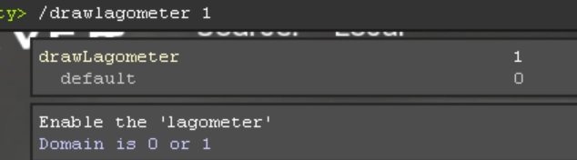
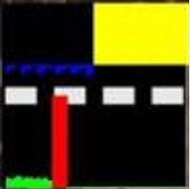

Some players may experience lag but are unsure where it comes from and what they can do to fight it, this guide is going to cover the basic troubleshooting steps to enable a lag-free experience
Start iw4x and join any public server (this won't work in private match).
Open the console using the tilde key on your keyboard (the key below escape) and type in the following command (you can disable the Lagometer afterwards by using 0 instead of 1):

Play the game for a while and observe what the Lagometer shows.

The Lagometer is divided into two parts, this is what they mean:
Upper part:
Blue: Everything is fine, your pc is fast enough to deliver stable FPS.
Yellow: You are dropping frames, your pc is unable to keep up with the game.
Lower part:
Green: You are not experiencing packet loss, incoming packets arrive correctly, the height of the green bar also displays how high your ping is.
Yellow: You are experiencing packet loss, incoming packets are incomplete.
Red: You are dropping packets, this is worst case.
Step 2a - Fighting FPS Lag:
If you are using a laptop to play the game and that laptop has a dedicated gpu (graphics card, for example nvidia gt960m) make sure the game uses that instead of the graphics chip integrated into your cpu. Have a look at this guide on how to to that.
If you do not have a dedicated gpu and are using integrated graphics have a look at this Guide on how to increase the amount of VRAM an integrated graphics chip can use.
Take note of your PC Specs, IW4x/MW2 is an old game but it won't run on anything, it's also known to use a bit more RAM and VRAM than the steam version of MW2. Make sure you have atleast 2GB of free RAM the game can use (not total RAM, free RAM, 2GB in total is not enough). Also make sure you have atleast 1GB of VRAM (video memory).
Close any programs you have running in the background that use alot of resources (if you only have a small amount of RAM a common example of a program that uses alot of RAM is Google Chrome).
Step 2b - Fighting Network Lag:
If the lagometer shows you are experiencing packet loss there isn't really anything you can modify on IW4x itself to fix that as it's an issue related to your internet connection. Go to this site and select a game from the dropdown menu (for example Apex Legends) then click "Start Test". This will tell you if your connection is dropping packets.
Make sure you don't have downloads or other programs running in the background that cause alot of network traffic.